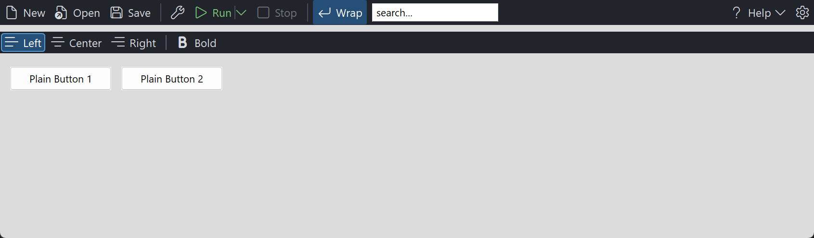

PsToolbar
An owner-drawn command toolbar for FreeBASIC / Win32. A horizontal strip of buttons, each with an optional icon and an optional caption, plus separators, split buttons, dropdown buttons, and cells that hold a child window of your own. When the strip runs out of room the items that no longer fit move into an overflow menu behind a chevron.
Items belong to one end of the bar or the other: left-gravity items pack forward from the left, right-gravity items pack against the right edge, so the "settings and help on the right" layout is expressed directly rather than by arithmetic. Toggle items can latch independently or form a mutually exclusive radio group.
The control owns its own painting, its geometry, its dropdown menus and its tooltips. It does not own your commands or your child windows: a TBR_KIND_CONTROL cell positions a window you created and destroys nothing, and the contents of a split or dropdown button's menu are yours to fill. It is mouse-driven only — it takes no focus and no tab stop, so it never steals the caret from an editor, and it has no keyboard interface of its own.
Repository: <https://github.com/PaulSquires/PsToolbar>
What it looks like

Requirements
| File | Purpose |
|---|---|
PsToolbar.bi / PsToolbar.inc | the control |
PsPopupMenu.bi / PsPopupMenu.inc | dropdown and overflow menus |
PsBufferPaint.bi / PsBufferPaint.inc | the flicker-free drawing surface |
PsImage.bi / PsImage.inc | the image loader behind PsToolbar_SetItemImage. Required even if you only ever use glyphs: PsToolbar.bi includes it. |
PsTipHost.bi / PsTipHost.inc | the tooltip backend switch — see Tooltips: two backends |
PsTooltip.bi / PsTooltip.inc | the owner-drawn tooltip. Required even if you never switch to it: PsTipHost.inc includes it. |
SegoeFluentIcons.ttf | optional — only if you use Segoe Fluent Icons glyphs |
Copy all twelve source files into your project. If you already vendor PsPopupMenu, PsBufferPaint, PsImage, PsTipHost or PsTooltip, you get one copy of each — #include once dedupes by resolved path.
Include order
PsToolbar.bi names types from both siblings, so their implementations must be compiled in first:
#include once "PsBufferPaint.inc"
#include once "PsPopupMenu.inc"
#include once "PsToolbar.inc"PsToolbar.inc includes PsImage.inc and PsTipHost.inc (which in turn includes PsTooltip.inc) for you, so those three add no line to your host.
GDI+ must be running
All geometry is drawn through GDI+. Initialise it before the first repaint and shut it down after every window is destroyed:
dim as ULONG_PTR gdipToken = AfxGdipInit()
' ... create windows, run the message loop ...
AfxGdipShutdown( gdipToken )Without this the control draws nothing at all.
Never name an identifier ok
GDI+ defines Ok = 0 as a Status enum value in namespace AfxNova, and hosts say using AfxNova. FreeBASIC is case-insensitive, so any variable of yours called ok becomes a duplicate definition the moment you adopt this control. Use bOK.
The message pump — required
PsToolbar_FilterMessage is mandatory. Call it for every toolbar, before your accelerator and dispatch handling:
do while GetMessage( @uMsg, null, 0, 0 )
if PsToolbar_FilterMessage( hToolbar, @uMsg ) then continue do
TranslateMessage @uMsg
DispatchMessage @uMsg
loopWithout it a dropdown has no keyboard navigation, never closes when you click outside it, and cannot be closed by clicking the very chevron that opened it. The call returns immediately when none of that toolbar's menus are open, so calling it for several toolbars costs almost nothing.
There is no IsDialogMessage obligation for the toolbar itself — it takes no tab stop. If you put a TBR_KIND_CONTROL child in it that should be reachable by Tab, your form needs IsDialogMessage as it would for any other child control.
Quick start
ghToolbar = PsToolbar_Create( hMain, IDC_TOOLBAR )
PsToolbar_SetTextFont( ghToolbar, ghFont(GUIFONT_10) )
PsToolbar_SetGlyphFont( ghToolbar, ghFont(SYMBOLFONT_12) )
PsToolbar_SetClickCallback( ghToolbar, @OnToolbarClick )
PsToolbar_AddItem( ghToolbar, TBR_KIND_COMMAND, !"\uE7C3", "New", IDM_NEW )
PsToolbar_AddItem( ghToolbar, TBR_KIND_COMMAND, !"\uE8E5", "Open", IDM_OPEN )
PsToolbar_AddSeparator( ghToolbar )
' A split button: the left half runs, the chevron drops a menu.
dim as long idxRun = PsToolbar_AddItem( ghToolbar, TBR_KIND_SPLIT, !"\uE768", "Run", IDM_RUN )
' Pinned to the right-hand end.
dim as long idxCfg = PsToolbar_AddItem( ghToolbar, TBR_KIND_COMMAND, !"\uE713", "", IDM_SETTINGS )
PsToolbar_SetItemGravity( ghToolbar, idxCfg, TBR_GRAVITY_RIGHT )
PsToolbar_SetTooltipText( ghToolbar, idxCfg, "Settings" )
ShowWindow( ghToolbar, SW_SHOW )Size and place it like any window — PsToolbar_GetIdealSize gives you the height it wants and the width it would need in order not to overflow:
dim as long nWant, nHeight
PsToolbar_GetIdealSize( ghToolbar, nWant, nHeight )
SetWindowPos( ghToolbar, 0, rc.left, rc.top, rc.right - rc.left, nHeight, SWP_NOZORDER )Write icon glyphs as !"\uXXXX" escape sequences, never as literal characters pasted into the source. FreeBASIC reads a source file that has no UTF-8 BOM as raw bytes, so a pasted Segoe Fluent Icons character arrives as three unrelated Latin-1 characters and draws garbage. The escape form is converted by the compiler and works whatever the file encoding.
The click callback:
sub OnToolbarClick( byval hToolbar as HWND, byval idx as long, byval id as long )
select case id
case IDM_NEW : DoFileNew()
case IDM_OPEN : DoFileOpen()
end select
end subConcepts
The control handle is a real HWND
PsToolbar_Create returns an ordinary HWND. Move and size it with SetWindowPos, show it with ShowWindow. It is created zero-sized, so nothing appears until you place it.
Item kinds
| Kind | Behaviour |
|---|---|
TBR_KIND_COMMAND | Momentary. Draws pressed while held, fires ClickCallback on a matched release. |
TBR_KIND_TOGGLE | Latches. Fires SelChangeCallback. With a group id it becomes a radio button. |
TBR_KIND_SEPARATOR | A vertical rule the control draws. Never hit-testable. |
TBR_KIND_SPLIT | Two zones: an action zone that behaves like COMMAND, and a chevron zone that opens the item's menu. |
TBR_KIND_DROPDOWN | The whole cell opens the item's menu. No action zone. |
TBR_KIND_CONTROL | A cell of declared width holding a child window you created. |
Geometry is derived, never set
You supply paddings, an icon size, a text gap and per-item overrides; the control computes every rectangle. Layout is lazy — a burst of AddItem calls costs one layout pass, and any geometry query forces a pending one, so results are always current.
cellWidth = padBefore + content + padAfter
content = iconWidth icon only
= textWidth caption only
= iconWidth + textGap + textWidth both
= separatorWidth SEPARATOR
= controlWidth CONTROL
+ chevronGap + dividerThickness + chevronWidth SPLIT
+ chevronGap + chevronWidth DROPDOWN
idealHeight = padTop + max( textHeight, iconHeight ) + padBottomA gap is charged only when there is something on both sides of it, so an icon-only item is legitimately narrower than a captioned neighbour, and icon-only, caption-only and icon+caption all come out of one formula.
Gravity, and where the overflow chevron sits
Left-gravity items pack forward from the client's left edge in the order you added them. Right-gravity items pack against the right edge, also in the order you added them, so the last right-gravity item sits hard against the right edge. The overflow chevron appears immediately inboard of the right-hand run — at the trailing edge of the flowing area, where a user looks for it — so it never displaces a pinned right-hand item.
When the run does not fit, items are moved into the overflow menu in this order:
- from the tail of the left run (its last item first), then
- from the front of the right run (its leftmost item first), so the outermost right-hand items survive longest.
TBR_KIND_CONTROL cells are never moved into the menu — a window cannot live inside one. If a control cell cannot be placed at all it is hidden.
Two fonts
The text font is a layout input: changing it re-measures every caption and moves everything. The glyph font is a paint-time input only — the icon cell is a size you declare, never measured, so a glyph too large for its cell simply clips. Both fonts are borrowed; keep them alive and destroy them yourself.
An icon can be a glyph or a real image
An item's icon slot holds either a Segoe Fluent Icons glyph or a picture loaded from a file — never both. The setters enforce that: PsToolbar_SetItemImage clears the glyph on a successful load, and PsToolbar_SetGlyph frees the image.
The image is fitted into the same declared icon cell a glyph would charge, aspect preserved, so switching an item from a glyph to a picture costs no layout change and no re-sizing of the bar. An item with neither charges no icon cell at all.
PsToolbar_SetItemImage( ghToolbar, idxRun, AfxGetExePathName() & "icons\run.png" )The toolbar owns every image it loaded and frees it for you — on PsToolbar_DeleteItem, on PsToolbar_Clear, and when the control is destroyed. Chevrons and the overflow button are always glyphs; there is no image path for the bar's own chrome.
Programmatic setters are silent
PsToolbar_SetSelected changes state without firing SelChangeCallback, which is what makes it safe to call from inside your own handler. Only user interaction notifies. The two exceptions are named as actions rather than setters: PsToolbar_Click and PsToolbar_Toggle do fire, which is how an accelerator drives the toolbar.
Radio groups
Give two or more TBR_KIND_TOGGLE items the same non-zero group id and checking one unchecks the others. Both edges are reported, loser first, and both state writes land before either callback — so a handler that reads the whole group sees a coherent one rather than a moment with two members checked. Clicking the member that is already checked is a silent no-op, exactly as a radio button behaves. "Nothing checked" is a legal state you can set programmatically but the user cannot reach.
Menus are themed from the bar
PSPOPUPMENU_COLORS carries no defaults except its separator colour, so a popup menu that is never given colours renders black on black. Every menu this toolbar creates is therefore themed from PSTOOLBAR_COLORS at creation, and re-themed whenever you call PsToolbar_SetColors — so theming the bar themes its menus for free and you set one palette.
If you want a different look for the menus, PsToolbar_SetMenuColors claims them permanently: from then on a bar re-theme leaves them alone, and menus created later still get your palette.
Menus are owned by the toolbar, filled by you
PsToolbar_GetItemMenu creates the item's PsPopupMenu on first call and hands it to you. Fill it like any popup menu, and handle its commands with PsPopupMenu_SetSelectCallback — do not call PsPopupMenu_SetNotifyWindow on it, because the toolbar registers itself there to track the menu's open/closed state. The toolbar destroys every menu it created when it is destroyed.
The overflow menu is different: its contents are rebuilt from scratch on every open, so rows you add to it will be gone next time. Its row ids are item index + 1, so your own command ids never enter its command stream. Picking a row activates that item exactly as clicking it on the strip would, through the same code path — your ClickCallback does not need to know which happened.
Child windows in a CONTROL cell
Parent the child to the toolbar, not to your form: the toolbar positions it with SetWindowPos in its own client coordinates. You create it, you own it, you destroy it. On PsToolbar_DeleteItem or PsToolbar_Clear the child is hidden and forgotten, never destroyed.
Reading it needs nothing from the toolbar — you created the window, so use it directly. PsToolbar_GetItemChild hands back the HWND if you did not keep it, and PsToolbar_FindItemByChild goes the other way.
Hearing from it does need something, because parenting the child here is what makes the cell work and is also what intercepts its notifications: WM_COMMAND (EN_CHANGE, EN_SETFOCUS, CBN_SELCHANGE, …), WM_NOTIFY and the WM_CTLCOLOR* family are all sent to "the parent", which is now the toolbar rather than your form. Two ways to get them back:
- Do nothing. Anything the toolbar is not asked to claim is forwarded to the toolbar's own parent, so a form that already handles these in its window procedure keeps working unchanged.
- Register
PsToolbar_SetControlNotifyCallbackand see them first.
The toolbar does not interpret notification codes and cannot: EN_SETFOCUS, CBN_SETFOCUS and BN_SETFOCUS are different numbers, and a generic cell does not know its child's class. You get the raw message with the item resolved. Selecting the text when a search box gains focus:
function OnControlNotify( byval m as PSTOOLBAR_CONTROLNOTIFY ptr ) as boolean
if m->uMsg <> WM_COMMAND then return false
if m->hChild <> ghSearchBox then return false
select case hiword( m->wParam )
case EN_SETFOCUS
SendMessageW( m->hChild, EM_SETSEL, 0, -1 ) ' select all
case EN_KILLFOCUS
dim as string sText = AfxGetWindowText( m->hChild )
ApplyFilter( sText )
end select
return false ' observed, not claimed -- let it reach the form too
end functionReturn TRUE to claim a message, and set m->lResult first if it needs a return value — WM_CTLCOLOR* is answered with an HBRUSH. The toolbar supplies no default for those: it positions your child and never themes it, so an unclaimed WM_CTLCOLOR* behaves exactly as it would have without the toolbar.
Keyboard in a CONTROL cell
Keystrokes do not arrive through the notify callback, and cannot: a key goes to the focused window, so a message merely destined for your child never passes through the toolbar at all. Enter, Escape and Tab in an embedded edit are handled in your message pump, and where you put the test is the whole difficulty:
do while GetMessage( @uMsg, null, 0, 0 )
' 1. The toolbar first, so that while a dropdown is open ENTER commits the highlighted
' menu row instead of reaching your control.
if PsToolbar_FilterMessage( hToolbar, @uMsg ) then continue do
' 2. Your child's keys next -- BEFORE IsDialogMessage.
if uMsg.message = WM_KEYDOWN andalso uMsg.hwnd = ghSearchBox then
select case uMsg.wParam
case VK_RETURN : RunSearch() : continue do
case VK_ESCAPE : SetWindowTextW( ghSearchBox, "" ) : continue do
end select
end if
' 3. Everything else.
if IsDialogMessage( hMain, @uMsg ) = 0 then
TranslateMessage @uMsg
DispatchMessage @uMsg
end if
loopPut step 2 after IsDialogMessage and the keys never arrive: that call turns VK_RETURN into an IDOK command for the form and VK_ESCAPE into IDCANCEL. Consuming the key with continue do also stops a single-line EDIT beeping at an unhandled return.
Behaviour and limits
- Horizontal only. There is no vertical orientation.
- No focus, no tab stop, no keyboard. The toolbar is mouse-driven. Reach commands from the keyboard through your own accelerators and
PsToolbar_Click. - The overflow menu does not scroll.
PsPopupMenuhas no scrolling, so an overflow list taller than the work area is clipped. This is a control for a dozen or so items squeezed into a narrow bar, not for fifty. - Only one menu chain is open at a time. Opening a second dropdown closes the first, and the first reports its closing edge.
- A
TBR_KIND_CONTROLcell is never moved into the overflow menu. If it cannot be placed it is hidden. - Trimmed separators do not reclaim their space. A separator that ends up leading or trailing the visible run is suppressed and costs nothing, but the width it frees is not given back to another item — the overflow split is not recomputed.
- An icon-only item with no tooltip has no readable name. If it overflows it appears in the menu as
#n. Give any item that might overflow a caption or a tooltip. - A split button's chevron zone owns the trailing padding, so clicks near the right edge of a split button open the menu rather than firing the action.
- A dropdown opens on the button-down, not the release.
- No double-click.
CS_DBLCLKSis off, so every click of a rapid pair is delivered — a toggle clicked twice quickly toggles twice.
API reference
Creation
| Function | Behaviour |
|---|---|
PsToolbar_Create( hWndParent, CtrlID ) as HWND | Creates the control, zero-sized. CtrlID becomes GWLP_ID. |
Building the bar
The item set is fully dynamic. The control fixes up its own internal indices across a mutation; if you hold an item index across one, fix up yours.
| Function | Behaviour |
|---|---|
PsToolbar_AddItem( h, itemKind, Glyph, Text, id, itemData ) as long | Appends. Returns the new index, or −1. |
PsToolbar_InsertItem( h, idx, itemKind, Glyph, Text, id, itemData ) as long | Inserts at idx; idx = count appends. Returns idx, or −1 if past the end. |
PsToolbar_AddSeparator( h ) as long | Appends a separator. |
PsToolbar_AddControl( h, hChild, nControlWidth, nControlHeight, id ) as long | Appends a cell holding your child window. nControlHeight = 0 fills the cell height. |
PsToolbar_DeleteItem( h, idx ) as boolean | Removes one item, compacting the rest down. Destroys that item's menu; hides but never destroys its child window. |
PsToolbar_Clear( h ) | Removes every item, destroys every menu, hides every child, resets all internal state. |
PsToolbar_Refresh( h ) | Marks the layout stale and requests a repaint. |
Counts and lookup
| Function | Behaviour |
|---|---|
PsToolbar_GetCount( h ) as long | Number of items, visible or not. |
PsToolbar_IsValidItem( h, idx ) as boolean | Is idx in range. |
PsToolbar_FindItemByID( h, id ) as long | First item with that id, or −1. |
PsToolbar_HitTest( h, x, y ) as long | Item at that client point, or −1. Separators, hidden and overflowed items are excluded; disabled items are not. |
PsToolbar_HitTestEx( h, x, y, byref nZone ) as long | As above and reports TBR_ZONE_*. The only way to tell a split button's action zone from its chevron. Returns −1 with nZone = TBR_ZONE_OVERFLOW over the overflow chevron. |
Item content and state
| Function | Behaviour |
|---|---|
PsToolbar_GetItemKind( h, idx ) as long | TBR_KIND_*, or −1 for an invalid index. |
PsToolbar_GetGlyph( h, idx ) as DWSTRING | The item's icon glyph. |
PsToolbar_SetGlyph( h, idx, Glyph ) as boolean | Sets it. Adding or removing a glyph changes whether the icon cell and text gap are charged, so this re-lays out. |
PsToolbar_SetItemImage( h, idx, Path ) as boolean | Loads a real .ico / .png / .bmp / .jpg into the item's icon cell instead of a glyph, and clears the glyph on success. "" removes the image. Returns TRUE when the item ends up as you asked — a successful load, or a successful removal — and FALSE only for a bad index or a file that would not decode. Re-lays out. |
PsToolbar_GetText( h, idx ) as DWSTRING | The item's caption. |
PsToolbar_SetText( h, idx, Text ) as boolean | Sets it and re-measures. |
PsToolbar_GetItemID( h, idx ) as long | The command id. |
PsToolbar_SetItemID( h, idx, id ) as boolean | Sets it. No layout change. |
PsToolbar_GetItemData( h, idx ) as integer | Free-form payload. |
PsToolbar_SetItemData( h, idx, itemData ) as boolean | Sets it. |
PsToolbar_GetSelected( h, idx ) as boolean | Is this toggle latched. |
PsToolbar_SetSelected( h, idx, isSelected ) as boolean | Silent, but still enforces a radio group — it will uncheck the item's group siblings. |
PsToolbar_GetEnabled( h, idx ) as boolean | |
PsToolbar_SetEnabled( h, idx, isEnabled ) as boolean | Disabling greys the item, stops it going hot and makes it swallow clicks. Disabling the item under a live press cancels the press. |
PsToolbar_GetVisible( h, idx ) as boolean | |
PsToolbar_SetVisible( h, idx, isVisible ) as boolean | Hiding removes the item from layout, hit-testing and overflow entirely — it stops occupying width, it is not merely blank. Hides a control cell's child too. |
PsToolbar_GetItemGroupID( h, idx ) as long | 0 = independent. |
PsToolbar_SetItemGroupID( h, idx, nGroupID ) as boolean | Joins a radio group. If the item is already checked the group is enforced immediately, silently. |
PsToolbar_FindCheckedInGroup( h, nGroupID ) as long | The checked member, or −1. Returns −1 for group id 0. |
PsToolbar_GetItemGravity( h, idx ) as long | TBR_GRAVITY_LEFT / TBR_GRAVITY_RIGHT. |
PsToolbar_SetItemGravity( h, idx, nGravity ) as boolean | Moves the item to the other end of the bar. |
PsToolbar_GetItemChild( h, idx ) as HWND | The child window of a control cell, or 0. |
PsToolbar_FindItemByChild( h, hChild ) as long | The control item holding that child, or −1. The reverse of the above. |
PsToolbar_Click( h, idx ) as boolean | An action: activates the item and fires ClickCallback (or toggles, or opens a dropdown, by kind). Refuses invalid, disabled, separator and control items. The door for an accelerator. |
PsToolbar_Toggle( h, idx ) as boolean | Flips a toggle as a user click would, enforcing its group, and fires SelChangeCallback. Refuses anything that is not an enabled TBR_KIND_TOGGLE. |
Geometry and layout
Bar-level setters take raw pixels — you DPI-scale them. Only the Create-time defaults are scaled for you. Every geometry query forces a pending layout.
| Function | Behaviour |
|---|---|
PsToolbar_GetIconSize( h, byref w, byref hgt ) | |
PsToolbar_SetIconSize( h, nIconWidth, nIconHeight ) | Ignores values ≤ 0. |
PsToolbar_GetPadding( h, byref before, byref after, byref top, byref bottom ) | |
PsToolbar_SetPadding( h, nPadBefore, nPadAfter, nPadTop, nPadBottom ) | Ignores negative values, so you can set one and pass −1 for the rest. |
PsToolbar_GetTextGap( h ) as long | |
PsToolbar_SetTextGap( h, nTextGap ) | Space between icon and caption. Charged only when there is a caption. |
PsToolbar_GetSeparatorWidth( h ) as long | |
PsToolbar_SetSeparatorWidth( h, nSepWidth ) | Thickness of a separator's rule. |
PsToolbar_GetSeparatorHeight( h ) as long | |
PsToolbar_SetSeparatorHeight( h, nSepHeight ) | 0 derives the rule's height from the content band. |
PsToolbar_GetChevronSize( h, byref w, byref gap ) | |
PsToolbar_SetChevronSize( h, nChevronWidth, nChevronGap ) | Width of the chevron zone, and the gap charged before it — before the chevron on a dropdown, before the divider on a split button. |
PsToolbar_GetDividerThickness( h ) as long | |
PsToolbar_SetDividerThickness( h, nThickness ) | The hairline inside a split button. Not DPI-scaled — a hairline stays a hairline. |
PsToolbar_GetCornerCurvature( h ) as long | |
PsToolbar_SetCornerCurvature( h, nCurvature ) | Rounding of the hot/pressed/selected fill; 0 is square. Repaints without re-laying out. |
PsToolbar_SetItemPadding( h, idx, nPadBefore, nPadAfter ) as boolean | Per-item override; −1 goes back to inheriting. |
PsToolbar_SetItemIconSize( h, idx, nIconWidth, nIconHeight ) as boolean | Per-item override; 0 goes back to inheriting. |
PsToolbar_SetItemControlSize( h, idx, nControlWidth, nControlHeight ) as boolean | Resizes a control cell. Ignores negative values. |
PsToolbar_GetItemRect( h, idx, byref rc ) as boolean | The whole cell. Empty for a hidden, overflowed or trimmed item. |
PsToolbar_GetItemIconRect( h, idx, byref rc ) as boolean | The icon box — or, for a separator, the rule. |
PsToolbar_GetItemTextRect( h, idx, byref rc ) as boolean | The caption span, not the ink. Empty when there is no caption. |
PsToolbar_GetItemChevronRect( h, idx, byref rc ) as boolean | The chevron glyph box. Empty except on split and dropdown items. |
PsToolbar_GetOverflowRect( h, byref rc ) as boolean | The overflow button's cell. Returns FALSE and an empty rect when nothing overflows. |
PsToolbar_GetIdealSize( h, byref nWidth, byref nHeight ) | Width the whole run wants, and the height the tallest content needs. Valid before the control has ever been sized. |
PsToolbar_GetIdealWidth( h ) as long | The width half of the above. |
PsToolbar_IsItemOverflowed( h, idx ) as boolean | Is this item currently in the overflow menu. |
PsToolbar_GetOverflowCount( h ) as long | How many items are, excluding trimmed separators. |
Appearance
| Function | Behaviour |
|---|---|
PsToolbar_GetColors( h, pColors ) | Fills your struct — the read half of read-modify-write. |
PsToolbar_SetColors( h, pColors ) | Copies the whole struct and repaints. |
PsToolbar_SetItemForeColor( h, idx, clr ) as boolean | Overrides one item's idle foreground. Hot, pressed, selected and disabled keep the bar's colours. |
PsToolbar_ClearItemForeColor( h, idx ) as boolean | Back to the bar's foreground. |
PsToolbar_GetTextFont( h ) as HFONT | |
PsToolbar_SetTextFont( h, hTextFont ) as boolean | A layout input: re-measures every caption. Also re-applies the fonts to any menus the toolbar owns. |
PsToolbar_GetGlyphFont( h ) as HFONT | |
PsToolbar_SetGlyphFont( h, hGlyphFont ) as boolean | A paint-time input only: repaints, never re-lays out. |
PsToolbar_GetGlyphs( h, byref wszChevron, byref wszOverflow ) | The two chrome glyphs. |
PsToolbar_SetGlyphs( h, wszChevron, wszOverflow ) | The split/dropdown chevron and the overflow button glyph. |
If no text font is set the control measures and paints with the stock GUI font; if no glyph font is set it uses the text font. Measuring and painting always use the same font.
Menus
| Function | Behaviour |
|---|---|
PsToolbar_GetItemMenu( h, idx ) as HWND | Creates the item's menu on first call and returns it thereafter. The toolbar destroys it. Handle its commands with PsPopupMenu_SetSelectCallback. |
PsToolbar_GetOverflowMenu( h ) as HWND | The overflow menu — for theming only. Its rows are rebuilt on every open. |
PsToolbar_SetMenuColors( h, pColors ) | Claims the palette of every menu this toolbar owns, present and future. After this, re-theming the bar no longer touches them. |
PsToolbar_IsDroppedDown( h ) as boolean | Is any menu of this toolbar's open. |
PsToolbar_GetDroppedItem( h ) as long | Which item's menu is open; −1 for the overflow menu or for nothing. Pair with IsDroppedDown to tell those apart. |
PsToolbar_DropDown( h, idx ) as boolean | Opens a menu programmatically; idx = -1 opens the overflow menu. Still fires DropDownCallback. Returns FALSE — and reports a balanced open/close pair — if the menu has no rows. |
PsToolbar_CloseUp( h ) | Closes whatever is open and fires the closing edge. A no-op when nothing is open. |
Tooltips
| Function | Behaviour |
|---|---|
PsToolbar_GetTooltipText( h, idx ) as DWSTRING | The item's own tooltip text. |
PsToolbar_SetTooltipText( h, idx, Text ) as boolean | Sets it. Per-item text wins over the callback. |
PsToolbar_GetTooltipHandle( h ) as HWND | The comctl32 tooltip window, for any TTM_* message you want to send it yourself. The toolbar owns it and destroys it. Returns 0 while this toolbar is on the PsTooltip backend — the honest answer, since a TTM_* sent to a PsTooltip window is silently ignored. |
PsToolbar_GetPsTooltipHandle( h ) as HWND | The PsTooltip window, or 0 while on the system backend. The door to PsTooltip_SetColors / SetFonts / SetStyle / SetMaxWidth / SetTitle / SetGlyph — none of which is mirrored here. |
PsToolbar_SetTooltipMode( h, nMode ) as boolean | PSTIP_MODE_SYSTEM (default) or PSTIP_MODE_PS. See below. |
PsToolbar_GetTooltipMode( h ) as long | Which backend is live. |
PsToolbar_SetHoverTime( h, milliseconds ) | Initial delay (TTDT_INITIAL) — how long the cursor must rest before a tip appears. Honoured by both backends. Double duty: the same value is TrackMouseEvent's dwHoverTime, so it also decides when the control considers an item hot. |
PsToolbar_SetAutoPopTime( h, milliseconds ) | How long the tip stays up (TTDT_AUTOPOP). |
PsToolbar_SetReshowTime( h, milliseconds ) | The shorter delay after a tip was recently dismissed (TTDT_RESHOW). |
An item with neither its own text nor a callback answer shows no tooltip. There is no automatic fallback to the caption.
Tooltips: two backends
The toolbar ships on the system (comctl32) tooltip. PSTIP_MODE_PS switches this instance to PsTooltip: owner-drawn, themeable, word-wrapping without a hand-sent TTM_SETMAXTIPWIDTH, and — the one that matters structurally — not a subclass of the control it serves, so it still works when the window under the cursor is a descendant rather than the toolbar itself.
The default is deliberate, not caution. PsTooltip's colour defaults are dark, so a control that switched itself would put a dark tip on a light form. Theme every tip in the process with PsTooltip_SetDefaultColors and friends, then opt in per instance.
The mode changes how a tip is drawn, never what it says. Both backends resolve per-item text through the same rule — the item's own tooltip text first, then TooltipCallback, then nothing.
All three delays are honoured by both backends and are stored as well as pushed, so a delay set before a mode switch is still in force after it. A delay you never set keeps the backend's own derivation from the system double-click time, which is what makes a tip appear on the same beat as every other tip on the machine.
PsTooltip_SetDefaultColors( @myTipColors ) ' once, at startup, for every tip in the process
PsTooltip_SetDefaultFonts( ghFontUI )
PsToolbar_SetTooltipMode( ghToolbar, PSTIP_MODE_PS )
PsToolbar_SetHoverTime( ghToolbar, 400 )
dim as HWND hTip = PsToolbar_GetPsTooltipHandle( ghToolbar )
if hTip then PsTooltip_SetMaxWidth( hTip, 260 ) ' not reachable on the system backendNeither backend adds a pump obligation — PsTooltip has no FilterMessage. PsToolbar_FilterMessage remains mandatory for an entirely separate reason: the dropdown and overflow menus are toolbar-owned PsPopupMenus.
Callback registration
| Function | Behaviour |
|---|---|
PsToolbar_SetPaintItemCallback( h, usersub ) | Replaces the built-in painter for every item. |
PsToolbar_SetMessageCallback( h, userfunc ) | Observe mouse messages. |
PsToolbar_SetTooltipCallback( h, userfunc ) | Supply tooltip text on demand. |
PsToolbar_SetClickCallback( h, usersub ) | Command and split-action clicks. |
PsToolbar_SetSelChangeCallback( h, usersub ) | Toggle latch/unlatch by the user. |
PsToolbar_SetDropDownCallback( h, usersub ) | Menu opened or closed. |
PsToolbar_SetControlNotifyCallback( h, userfunc ) | Messages a TBR_KIND_CONTROL child sent to its parent. |
Pass 0 to any of these to remove the callback.
Message pump and probes
| Function | Behaviour |
|---|---|
PsToolbar_FilterMessage( h, pMsg ) as MSG ptr → boolean | Required in your message loop. Returns TRUE when the message was consumed and must not be dispatched. Returns FALSE immediately when no menu is open. |
PsToolbar_CountRenderedTones( h, nPart, idx ) as long | Renders the bar offscreen and counts distinct colours inside one TBR_PART_* rect. |
PsToolbar_HashRenderedPart( h, nPart, idx ) as ulong | FNV-1a hash of the same rect. |
The two probes are public so that a host writing its own paint callback can check it: a low tone count means the callback is flooding the control, and two equal hashes across a state change mean the change never reached the pixels. Measure your own healthy and broken values — a threshold that works for one part rect does not transfer to another.
Pure helpers
These take no handle and touch no window, so you can use them to reason about layout before you build one.
| Function | Behaviour |
|---|---|
PsToolbar_ComputeCellWidth( nKind, nIconWidth, nTextWidth, nTextGap, nSepWidth, nControlWidth, nChevronWidth, nChevronGap, nDividerThick, nPadBefore, nPadAfter ) as long | The cell-width formula from Concepts. A zero width means that part is absent. |
PsToolbar_ComputeOverflowSplit( nCellW(), nGravity(), nKind(), nCount, nClientW, nOverflowCellW, bOverflow(), byref bNeedOverflow ) | Decides which of the visible items leave the strip. Arrays are indexed over visible items only, in author order. |
PsToolbar_ResolveMood( isEnabled, isPressed, isHot ) as long | The TBR_MOOD_* precedence, so your painter agrees with the control's. |
Colors
PSTOOLBAR_COLORS, copied on SetColors. Defaults are a dark theme; a light-theme host sets all nine.
| Field | Paints | When |
|---|---|---|
BackColor | The bar background, and every cell's base fill | Always — the state fill is drawn over it |
ForeColor | Glyph and caption | Idle |
BackColorHot | The cell fill | Pointer over the item |
ForeColorHot | Glyph and caption | Pointer over the item |
BackColorSelect | The cell fill | Latched toggle, and the pressed flash |
ForeColorSelect | Glyph and caption | Latched toggle, and pressed |
ForeColorDisabled | Glyph and caption | Disabled |
SeparatorColor | A separator's rule | Always |
SplitDividerColor | The hairline between a split button's two zones | Always, on split items |
State precedence, resolved by PsToolbar_ResolveMood so every renderer agrees:
disabled > pressed > hot > idleisSelected is deliberately not part of that ladder — a latched toggle can also be hot or pressed. The painter combines the two: a selected idle item takes the Select pair, and a selected disabled item keeps the Select background under the disabled foreground.
Pressed reuses the Select pair rather than adding a tenth colour: on a command item it is the flash that makes the button feel pressed, and on a toggle it previews the latched look the release is about to produce. An open dropdown paints hot, so the button stays lit while its menu is up.
The state fill is a rounded rect drawn over the base fill, so the bar background always shows in the gaps between cells and an item reads as a pill. On a split button a hover lights only the half the pointer is over.
Callbacks
Paint
type TBR_PaintItemCallbackSub as sub( byval p as PSTOOLBAR_PAINTINFO ptr )Setting this replaces the built-in painter for every item, separators and the overflow button included. The overflow button arrives with itemID = -1 and itemKind = TBR_KIND_DROPDOWN, so one renderer can serve both.
Three rules:
- Fill
p->rc, notp->rcIcon.rcincludes the item's padding; leaving part of it unpainted shows the bar background through. - Do not stroke a frame with
PaintBorderRect— it fills before it strokes and will erase everything beneath. UsePaintRoundOutline.PsToolbar_CountRenderedTonesexists so you can check you have not. - Draw the caption in the font you gave
PsToolbar_SetTextFont. The control measured with it; painting a bolder variant makes the cell too small and the caption ellipsize. If you want bold, hand the bold font toSetTextFontso measuring and painting agree.
PSTOOLBAR_PAINTINFO:
| Field | Meaning |
|---|---|
hToolbar | The control, so the callback can query it |
itemID | Model index; −1 for the overflow button |
b | The control's PsBufferPaint for this repaint — paint through this, never the screen DC |
itemKind | TBR_KIND_* |
rc | The whole cell: fill this |
rcIcon | The icon box — or a separator's rule |
rcText | The caption span, not the ink, so DT_END_ELLIPSIS has somewhere to ellipsize into |
rcChevron | The chevron box; empty except on split and dropdown items |
nMood | TBR_MOOD_* |
isHot | The pointer is over this item |
isSelected | A latched toggle |
isPressed | A live press is on this item and the cursor is still over it |
isEnabled | |
isChevronHot | The pointer is specifically over a split button's chevron zone; always FALSE for other kinds |
isDropped | This item's menu is currently open |
wszGlyph | The icon glyph |
wszText | The caption |
pImage | The resolved CGpImage ptr for this item's icon cell, or NULL. When it is set, draw it with p->b->PaintImage instead of the glyph — a custom painter should honour it, image first |
Message
type TBR_MessageCallbackFunc as function( byval m as PSTOOLBAR_MESSAGEINFO ptr ) as booleanReturn TRUE to suppress the control's own handling of that message.
The result is ignored for WM_LBUTTONUP. The control holds mouse capture across a press on an action zone and the up-message is what releases it; a callback that suppressed it would strand the capture and route every later click to this control. Suppressing WM_LBUTTONDOWN suppresses the press, never the capture bookkeeping.
| Field | Meaning |
|---|---|
hToolbar | |
uMsg, wParam, lParam | The raw message |
idx | Item under the mouse, or −1 |
nZone | TBR_ZONE_* |
Tooltip
type TBR_TooltipCallbackFunc as function( byval hToolbar as HWND, byval idx as long ) as DWSTRINGConsulted only when the item has no tooltip text of its own, and only when a tip is about to show. Return "" for no tooltip.
Click
type TBR_ClickCallbackSub as sub( byval hToolbar as HWND, byval idx as long, byval id as long )A matched press and release on the same zone of a command item, or a split button's action zone. Nothing fires for a cancelled gesture — press, slide off, release. Toggles report through SelChangeCallback instead.
It also fires for a pick from the overflow menu, so a handler never has to know whether the item was on the strip or behind the chevron.
Selection change
type TBR_SelChangeCallbackSub as sub( byval hToolbar as HWND, byval idx as long, byval isSelected as boolean )A toggle latched or unlatched by the user. Fires after the state is updated, so PsToolbar_GetSelected already agrees. For a radio group both edges fire, loser first, with both state writes landing before either callback. PsToolbar_SetSelected does not fire it.
Control notify
type TBR_ControlNotifyFunc as function( byval m as PSTOOLBAR_CONTROLNOTIFY ptr ) as booleanA TBR_KIND_CONTROL cell's child sent a message to its parent. Return TRUE to claim it, having set m->lResult if it needs a value; return FALSE and it is forwarded to the toolbar's own parent. See Child windows in a CONTROL cell for the worked example.
PSTOOLBAR_CONTROLNOTIFY:
| Field | Meaning |
|---|---|
hToolbar | |
idx | The control item that sent it, or −1 if the sender is not one of them |
hChild | The sending child window, or 0 when it cannot be identified |
uMsg, wParam, lParam | The raw message |
lResult | The value to return when you claim the message |
Drop down
type TBR_DropDownCallbackSub as sub( byval hToolbar as HWND, byval idx as long, byval hMenu as HWND, byval isOpen as boolean )idx is −1 for the overflow menu. It reports a window-state transition, not a value change, so it fires for programmatic opens too.
For a split or dropdown item the opening edge runs before a single row is built — that is the just-in-time hook for a menu whose contents change:
sub OnDropDown( byval hToolbar as HWND, byval idx as long, byval hMenu as HWND, byval isOpen as boolean )
if isOpen = false then exit sub
if idx = -1 then exit sub ' the overflow menu builds itself
PsPopupMenu_Clear( hMenu )
PsPopupMenu_AddItem( hMenu, IDM_RUN_DEBUG, "Run in Debugger", "F5" )
PsPopupMenu_AddItem( hMenu, IDM_RUN_RELEASE, "Run Release", "Ctrl+F5" )
end subThe overflow menu is the exception: the control fills it from the items that did not fit, and its opening edge fires after it is built.
Constants
Item kinds — PSTOOLBAR_ITEMKIND
| Constant | |
|---|---|
TBR_KIND_COMMAND | 0 |
TBR_KIND_TOGGLE | 1 |
TBR_KIND_SEPARATOR | 2 |
TBR_KIND_SPLIT | 3 |
TBR_KIND_DROPDOWN | 4 |
TBR_KIND_CONTROL | 5 |
Gravity — PSTOOLBAR_GRAVITY
TBR_GRAVITY_LEFT (0), TBR_GRAVITY_RIGHT (1)
Hit zones — PSTOOLBAR_HITZONE
| Constant | Meaning |
|---|---|
TBR_ZONE_NONE | Nothing there |
TBR_ZONE_ACTION | The item's main body |
TBR_ZONE_CHEVRON | A split button's dropdown zone |
TBR_ZONE_OVERFLOW | The overflow chevron; the item index is −1 |
Parts — PSTOOLBAR_PART
TBR_PART_TOOLBAR, TBR_PART_ITEM, TBR_PART_ICON, TBR_PART_TEXT, TBR_PART_CHEVRON
Moods — PSTOOLBAR_MOOD
TBR_MOOD_IDLE, TBR_MOOD_HOT, TBR_MOOD_PRESSED, TBR_MOOD_DISABLED
Defaults
DPI-scaled at Create unless noted. Setters afterwards take raw pixels.
| Constant | Value |
|---|---|
PSTOOLBAR_DEFAULT_ICONWIDTH / _ICONHEIGHT | 16 / 16 |
PSTOOLBAR_DEFAULT_PADBEFORE / _PADAFTER | 6 / 6 |
PSTOOLBAR_DEFAULT_PADTOP / _PADBOTTOM | 4 / 4 |
PSTOOLBAR_DEFAULT_TEXTGAP | 6 |
PSTOOLBAR_DEFAULT_SEPWIDTH | 1 |
PSTOOLBAR_DEFAULT_CHEVRONWIDTH | 14 |
PSTOOLBAR_DEFAULT_CHEVRONGAP | 4 |
PSTOOLBAR_DEFAULT_DIVIDERTHICK | 1 — not DPI-scaled |
PSTOOLBAR_DEFAULT_CURVATURE | 4 |
PSTOOLBAR_HOTTRACK_MS | 100 |
The default chevron glyphs are Segoe Fluent Icons E70D (ChevronDown) and E712 (More); PsToolbar_SetGlyphs changes both.
Related controls
PsToolbar creates a PsPopupMenu for each split or dropdown item and one for the overflow button. You fill those menus and handle their commands through PsPopupMenu's own API, so see its documentation for row building, submenus, theming and the check gutter.
If you want a static icon-only strip with no captions, no overflow and no menus, PsIconPanel is the smaller control. For a single button, PsButton; for a row of text labels with one current, PsSelectBar.